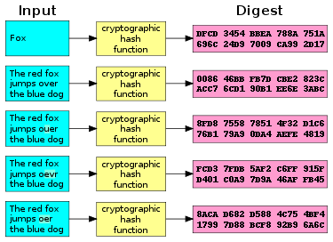

Hashing Algorithms 101
Cryptography is not a new concept to humans. We have been encrypting messages, trying to make it impossible for other humans to read our messages. It is nothing new. In roman times, Julius Caesar came up with a new kind of encryption where he used to shift all the letters of the message to a certain number. This was called Caesar Cipher. We don’t know if this story is factually correct, but Caesar cipher might be the most known of all the simple encryption techniques. Cryptography has intrigued many humans since the romans. We have had very simple and very advanced encryption algorithms. All this to hide the messages so it safely reaches the other side. The introduction of the internet made it necessary for cryptography to evolve. Between the millions of text messages across platforms to the important business emails, cryptography is arguably the most important aspect of the internet we know today.

The algorithms we have nowadays are not that simple and they might not even serve the purpose cryptograph was invented to serve but they still are just as important. Hashing algorithms are one of these complex algorithms. These algorithms are just one way which just means that they can only be encrypted not decrypted unlike Caesar Cipher which was made to be decrypted. More on this later. Hashing algorithms encrypt everything from text messages to passwords. They hold the internet together.
The beginning of computers and cryptography
When Alan Turing OBE FRS accidently invented Computer Science, his intentions were not to invent a new stream of sciences but to end the world war sooner. He did succeed for it has been calculated that he shortened the war length by almost 5 years. His contributions are undoubtedly priceless. The Turing Machine, that Dr. Turing built, was supposed to break another machine developed by Nazi Germany to transmit military messages, it was called the Enigma. The word enigma literally translates to something that is mysterious in nature and the enigma for many years WAS just that. Alan Turing had an idea of the Turing Machine to break this code. The Turing Machine can be considered the first modern computer ever created and the first modern computer was used to break the bounds of cryptography. And so it begins, the race to develop new cryptography methods and the parallel race to find ways to DECRYPT the algorithms.

The Enigma
MODERN Cryptography
Cryptography of nowadays rely on complex mathematical operations on the data provided. There have been many such
algorithms. Many of these algorithms have even been officially recognized as unsafe to use. Therefore, new
algorithms always have to keep developing. Hashing algorithms are one-way algorithms which means that they can
only be encrypted never decrypted. This might be sound difficult to get your head around but some calculations
like 2 + 2 = 4 are just one way. If I give you 4, you can just guess the other two numbers, there are a lot of
combinations of numbers that fit that equation so this calculation is just one-way. Hashing algorithms are like
these but much more complex. A hashing algorithm has to be fast to calculate more data in less time and weirdly it
also has to deliberately be slow so that it’s not easy to break the encryption. A hash or the encrypted message is
always of a fixed size, disregarding the format or the length of the input. This means that if you use a SHA-1 on
a text like this: “a”, it will produce a 40 characters long hexadecimal value. It’ll also produce a 40 bits long
hex value if you give it a longer text or even give it a new file format like an image or a video. That’s the
beauty of hashing algorithms. They also make use of something called the “avalanche effect”. When you change even
the smallest details of the file or the text you’re encrypting, the whole hash changes. This can be used to our
benefit when we want to make sure our files are not tampered with. These qualities define a hashing algorithm,
they are secure and perfect for the internet we know today.
What’s SHA-1?
When people realized they needed very strong algorithms such as hashing algorithms, many algorithms were introduced. Among these many are now officially insecure including SHA-1. MD2, MD4, MD5 and MD6 were older algorithms (insecure now) which are being proceeded by the SHA algorithms.
Secure Hashing Algorithm or SHA is an ironic name because one of these types of algorithms has already been declared insecure in 2005. The SHA-1 algorithm was introduced in 1995 by the US NSA. That sounds scary because it is. The NSA is notorious of asking companies and technologies to give them access to almost all of it. The NSA created an algorithm for the world to use? There MUST be a backdoor in there somewhere then. The truth is everyone needed an algorithm like SHA and no backdoors are there in SHA-1 yet it has been announced insecure in 2005. It’s successor, SHA-2, is for now the way to go. SHA-2 is considered safe for now but as computers get faster at breaking codes, SHA-2 too will have to go. Also SHA-3 is in development. SHA-1 has not been “broken” because as established, hashing algorithms are one-way, how in the world would anyone break a one-way calculation? They won’t. Brute force comes in here. The brute force approach to cracking these algorithms is just checking ALL the possible combinations there can be and finding the right one. Sounds simple enough, BUT IT ISN’T SIMPLE. It takes 6 days to crack 90% of a SHA-1 code. When the world realized that this was possible, it didn’t take time to shift from SHA-1 to SHA-2 and now google chrome will give you the little red warning that you’re about to enter an insecure site when the site uses SHA-1 to encrypt.

So what SHA-1 is a horrible algorithm? We can still use it to learn more about these algorithms! It’s not that difficult to code up a SHA-1 algorithm also it’s not that easy. The calculations have to be perfect. The answer should always be a 40 bits hexadecimal value which is 160bits of binary. I won’t tell you exactly how this is done because… no. However, here’s a sneak peek: Take the input, split the characters into an array, turn it into ASCII code, convert ASCII to binary, join the array and append a 1, pad 0s until the length is 512 modulus 448 then you take the previous ASCII again and convert it into binary again... it’s a long process. However, this long process makes a hashing algorithm secure (not that SHA-1 is secure).
Actual usage of hashing algorithms
Do you think huge websites like facebook or Instagram or twitter store your password in their servers? If you do, you’re obviously wrong. If hackers ever get into their servers, websites like these would be risking their user’s data and you know how disastrous that is. Instead, servers like this store the hashes of your password, so, yes, they don’t even know your password. When you type in your password, a complex calculation is done to it which makes it unreadable, even to the website servers. Every time you type your password, the same calculations result in the same hash confirming your identity. That’s how closely embedded these algorithms are on the internet. They serve a very important purpose. From verifying file and message integrity and file identification to simply storing passwords, we’ll be a lot more vulnerable without cryptography on our side.